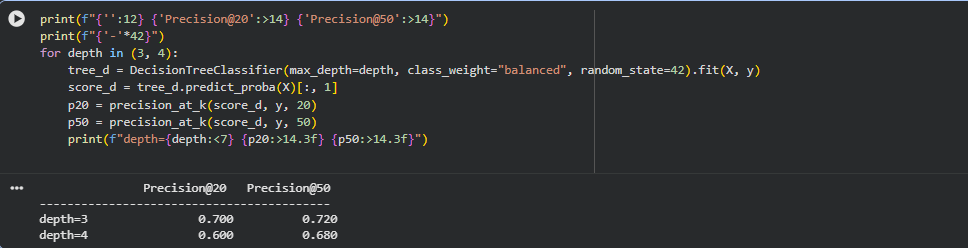
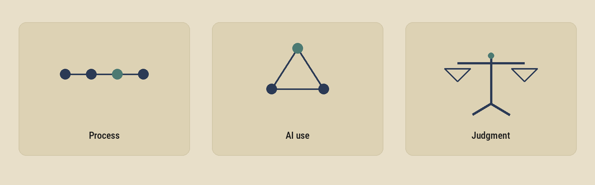

Case study: beating a hand-written rule at flagging declining content
FlyRank AI internship — real search & content performance data, 30,000 pages, 32 clients.
Notebook 1 — Does search volume actually mean more traffic?
The problem
The team was checking if a learned model could catch declining webpages better than a hand-written rule — across 30,000 real pages. Part of that meant stress-testing an earlier finding: that "high search volume → more traffic" barely held up (correlation near zero). The question was whether that near-zero result was real, or just noise from dead, zero-impression pages dragging the number down.
What I did
I was given three options and picked the one that looked most doable at my level: re-run the original analysis, but filtered down to only pages that had impressions in the last 90 days, then recheck the correlation. I collaborated with Claude to write and understand the code — I'm a junior in ML, still learning the fundamentals, so a lot of this was new to me.
What came of it
The correlation stayed close to zero, even after filtering. The original finding held — it wasn't an artifact of dead pages skewing the numbers. I expected filtering to change the answer. It didn't. That's when it clicked: check a number before you trust a claim.
Notebook 2 — Is the model learning, or cheating?
The problem
Same underlying task — flagging declining pages — but now the question was whether a model built to do this was actually learning something real, or just cheating off a feature that gave away the answer. My specific task: test whether increasing tree depth improved precision@50, using honest, non-leaky features.
What I did
The notebook walked through a worked example first — a feature called trend_pct that looked like it massively boosted precision, but only because the "declining" label had been defined using trend data in the first place. It wasn't predicting anything; it was just repeating the answer back. That part was flagged for me to notice, not something I found blind.
My actual task was separate: run the depth test using only the clean features — content age, last updated date, traffic, ranking position, click rate, and length. No trend_pct.

Real output from the notebook — precision dropped as tree depth increased, not improved.
What came of it
Increasing depth made precision@50 worse, not better — classic overfitting. Going deeper wasn't the fix. The clean model still beat the hand-written rule overall (confirmed from Notebook 1's baseline), but more depth isn't how you improve it.
How I work

Process — pick one small, well-defined thing to test, run it, read the actual number before deciding anything.
AI use — I use Claude to write and understand code together, not to hand off decisions. If I can't explain a line, I don't ship it.
Judgment — a good-looking score gets checked before it gets trusted. Depth going up but precision going down was the clearest example: the "better" model wasn't actually better.
Proof this is a real, maintained repo
github.com/Ahil-Adnan/FlyRank-Machine-Learning — every notebook and assignment, committed as I go.
About me
I'm a junior ML intern, still learning the basics. I'm taking a gap year right now to build up my skills before I go study in Germany.
A CV can say I did an ML internship — it can't show that I can actually take messy data, build a model, and explain honestly what it proves.
Button not opening your mail app? Email me directly: ahiladnanabc2007@gmail.com